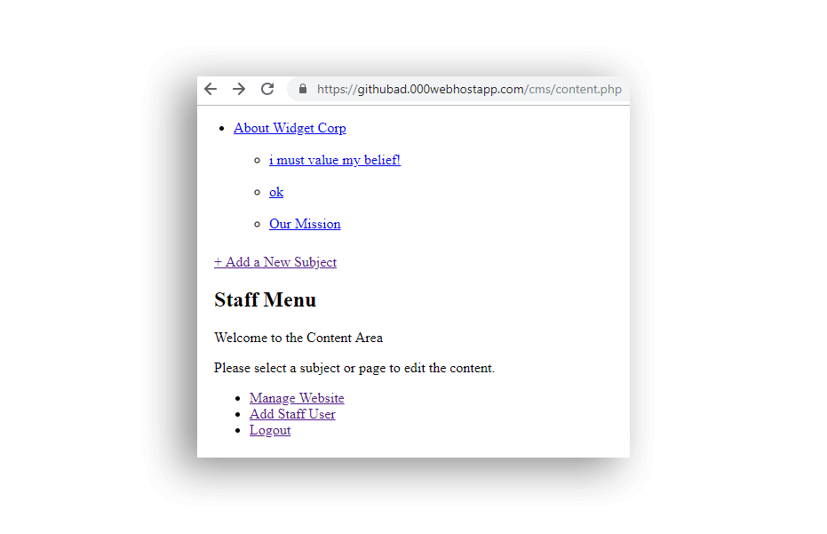

Changing Career
It enables innate ability to create great things.
Technology excites ME
The satisfaction of creating a meaningful product that helps people is immense. Being a creative individual, who is always thirsty to learn more, design/development soon became second nature.
The advancements in technology keeps me positively humble, knowing no one can learn everything. But one should be able to seek right information, learn from it and understand to implement to grow his skills. It gives you the right attitude to work with people and respect those who have worked hard to become who they are.
My Journey
Having freelanced as a writer, professionally served as a Search Engine Optimizer and lately pursuing Master's in Marketing helped me to connect the dots. Effective communication is a valuable skill, that translates in to visual elements and smart usability decisions. I was firmly convinced, while some may consider it becoming a jack of all, I was on a unique path to be able to understand the bigger picture to better commuunicate with the team and take charge of creating great products.
In an Endeavour
What was once a hobby, now is an integral part of my skills. Back in 2009, I did a 3-years IT course as a hobby. There was this desire to understand more of how things work, to be able to freelance in creative field.
Having a natural zeal towards communication made me love marketing. From understanding the concept of a brand key to creating a complete brand profile; had quite a number of achievements in marketing. I always remained fascinated by IT though. It was when I realized, my keen interest lies in IT while taking advantage of a creative thought process to be able to prove as a valuable asset to company.
In such a circumstrance, am reaching out for a remote job to work with growing mindsets.
No template used. Designed and coded from scratch, using Bootstrap. Used Gulp,
SCSS, PostCSS, BrowserSync, Webpack amongst others to improve productivity.
Adobe Photoshop / HTML / CSS
3 Pages designed in Adobe Photoshop, coded using Bootstrap. It's coded keeping flexibility in mind, to provide an ability to edit every aspect of the design. Will be used for Wordpress.
Made 30 unique projects, each improved my understanding about Javascript by heaps and bounds. Added unique features to extend the basic functionality of most projects, to add to my learnings.

Learned about React concepts such as virtual DOM, understood middlewares such as Redux Thunk or Redux Promise, made
use of Axios and useful libraries such as Lodash, Sparklines etc. Practiced day-in and day-out, by creating 4 pure
React/Redux based apps. Created a couple dozen components to firmly understand everything from Lifecycle methods to
State management and Redux (actions, reducers etc.)
Made 4 different small applications. To better understand AJAX, equipped myself with both traditional and modern
approaches of making AJAX calls. Learned about promises, async/await and how to fetch data asynchronously.

Please check Github Repo for login detail, public and admin links along with guidelines about the app and if you want to install a local copy to check the work done.
Wordpress Theme / Plugin Development

Countless hours of learning Wordpress led to creating a marvelous end product, am specially proud of it having covered an array of important Wordpress features. Though yet to improve certain key features and correct a few glitches, rather a little incomplete project and in the making.
PHP / MYSQL
OOP Photo Gallery

As simple it may seem, it is undoubtedly very challenging conceptually to understand key OOP concepts and implement in the most smart way possible. Glad to have done this project to further my PHP and OOP knowledge.